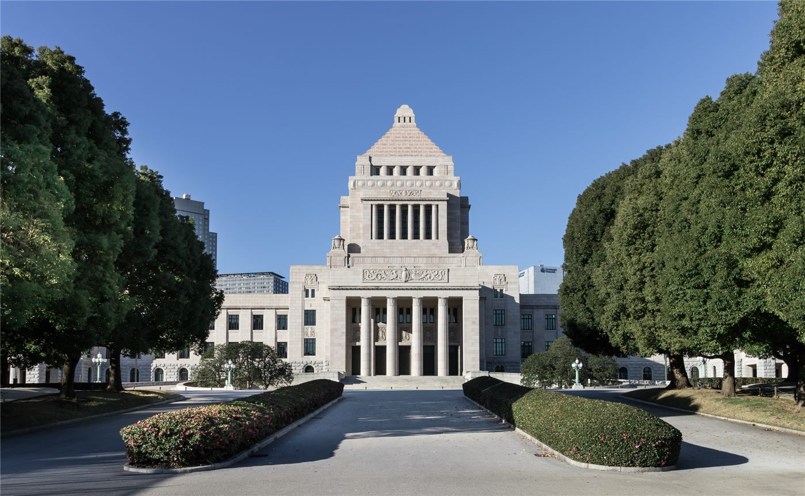

대만 지방선거, 야권 연대 움직임 부각… 일부 선거구는 조율 실패
대만 지방선거 후보 등록 국면에서 국민당과 민중당의 연대 움직임이 부각되고 있다. 다만 신주 주베이 등 일부 선거구에서는 후보 조율이 결렬됐다.
정가호 기자 · 2026.09.04
橋대만

대만 지방선거 후보 등록이 시작된 가운데, 국민당과 민중당 사이의 협력 구도가 지역별로 다르게 나타나고 있다고 대만 언론이 보도했다.
광고 문의 · 300×250타이중 시장 루슈옌, 민중당 주석 황궈창, 국민당 인사 장치천 등이 공동 행보에 나선 장면이 보도되면서 야권 연대가 부각됐다.
조율이 이뤄진 곳과 아닌 곳
일부 선거구에서는 단일 후보를 세우는 방향으로 협의가 진행됐다. 반면 신주현 주베이시에서는 후보 조율이 결렬됐다고 전해진다.
황궈창 주석은 조율 결렬에 대해 나무 한 그루 때문에 숲 전체를 태울 것이냐는 취지의 표현으로 유감을 나타낸 것으로 보도됐다.
여당의 대응
집권 민주진보당은 지도부가 직접 지원 유세에 나서는 방식으로 대응하고 있다고 전해진다. 라이칭더 총통과 차이잉원 전 총통, 샤오메이친 부총통이 함께 움직이는 구도가 보도됐다.
지방선거는 통상 전국 단위 정당 지지도와 다른 흐름을 보이는 경우가 많다. 지역 현안과 후보 개인의 인지도가 결과에 크게 작용하기 때문이다.
남은 일정
후보 등록 절차가 마무리되면 선거구별 대진표가 확정된다. 그 시점 이후에야 연대의 실제 범위를 확인할 수 있다.
본지는 등록이 끝나기 전 단계에서 승패를 예단하지 않으며, 각 진영의 발표와 보도된 사실을 구분해 전한다.
재한 대만계 주민의 시선
한국에 거주하는 대만 국적 주민에게 지방선거는 재외투표 대상이 아니지만, 지방정부의 교육·교류 정책은 자매도시 사업과 유학 협력 등을 통해 간접적으로 닿는다.
지방정부 교체가 교류 사업의 우선순위를 바꾸는 사례는 과거에도 있었다.
출처·참고 (사실 확인용 — 본문은 직접 재작성)
· 연합보 2026-08-31
· 자유시보 2026-08-31
· 연합보 2026-08-31
· 자유시보 2026-08-31